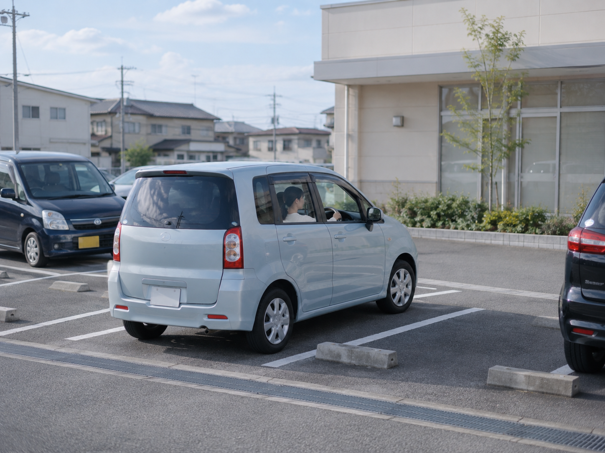
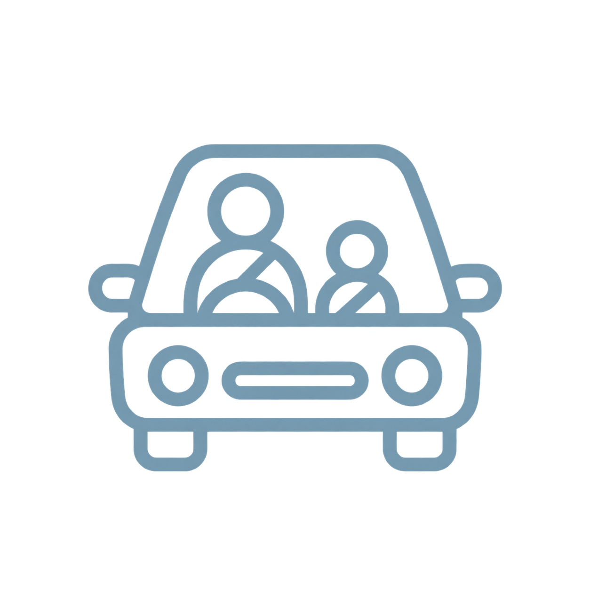

Lesson 01｜送迎ルート
毎日使いたい道を、そのまま練習。
保育園や幼稚園、学校までの道など、
これから日常で使いたいルートを実際に走ります。
曲がりにくい交差点や、混みやすい時間帯なども確認しながら、
「ここなら一人でも走れそう」を増やしていきます。

免許はある。でも、久しぶりの運転はやっぱり怖い。
michiは、自宅周辺やいつもの送迎ルートを使って、
あなたのペースで練習できる出張型ペーパードライバー講習です。
PROBLEM
免許はあるし、運転できたら便利なのも分かっている。
それでも、久しぶりの運転を前にすると、なかなか一歩を踏み出せない。
そんな不安は、特別なことではありません。
どこから練習を始めればいいのか分からない。
スーパーや病院まで行けても、最後の駐車を考えると不安になる。
対向車や後ろの車が気になって、焦ってしまいそう。
自分ひとりならまだしも、子どもを乗せると思うと余計に緊張する。
「今行けたよ」と言われるほど、焦ってしまうこともある。
怖いままでも、大丈夫。
できるところから始められます。
CONCEPT

久しぶりの運転に不安があるのは、自然なことです。
michiでは、最初から上手に運転することを目指しません。
まずはシートやミラーの確認から。
交通量の少ない道を走ることから。
駐車だけを練習することから。
今できることを確かめながら、少しずつ次へ進みます。
練習するのは、教習所のための道ではなく、
保育園までの道、スーパーまでの道、病院までの道。
あなたがこれから本当に使いたい、いつもの道です。
運転を克服するためではなく、
必要なときに、自分で動ける日常のために。
LESSON
michiのレッスンは、決まったコースを順番に進むものではありません。
送迎、買い物、通院。
これから実際に使いたい道や、今いちばん不安なことに合わせて練習します。
Lesson 01｜送迎ルート
保育園や幼稚園、学校までの道など、
これから日常で使いたいルートを実際に走ります。
曲がりにくい交差点や、混みやすい時間帯なども確認しながら、
「ここなら一人でも走れそう」を増やしていきます。

Lesson 02｜駐車
自宅やスーパー、病院など、
普段使う場所を想定して駐車を練習できます。
一度でうまく入れることより、
どこを見て、いつハンドルを切るかを少しずつ確認します。
Lesson 03｜狭い道
対向車との距離や、どこで待てばいいかなど、
住宅街ならではの不安を一緒に確認します。
無理に進まず、止まる・待つ判断も練習のひとつです。
Lesson 04｜車線変更
ミラーの見方、ウインカーのタイミング、
後続車との距離などを一つずつ確認します。
交通量の少ない道から始め、慣れてから次へ進みます。
Lesson 05｜右左折
歩行者、自転車、対向車など、
見る場所と順番を整理しながら練習します。
「何を見ればいいか」が分かると、運転中の焦りも減らしていけます。

全部できるようになってから、日常で運転するのではなく。
日常で必要なことから、ひとつずつ。
FEATURES
運転の不安も、使いたい道も、人それぞれ。
michiでは、決まったコースに合わせるのではなく、
今のあなたと、これからの暮らしに合わせてレッスンを組み立てます。
Feature 01
保育園までの送迎ルート、よく行くスーパー、病院までの道。
教習所のためではなく、これから本当に使いたい道を練習します。
Feature 02
駐車だけ。狭い道だけ。車線変更だけ。
今いちばん不安なことを優先して、必要な部分から練習できます。
Feature 03
いきなり難しい道へ出る必要はありません。
今できることを確認しながら、次のステップへ進みます。
決まった順番より、あなたに必要な順番で。
SAFETY
「もし操作を間違えたら」
「いきなり公道を走るのは怖い」
そんな不安がある状態で、無理に運転を始める必要はありません。
michiでは、今の運転レベルを確認しながら、
安全を優先してレッスンを進めます。
Safety 01｜補助ブレーキ
講習車には助手席側の補助ブレーキを装備。
自家用車でのレッスンも、対応可能な車両には簡易補助ブレーキを使用します。
インストラクターが必要に応じて安全をサポートできる状態で練習します。
Safety 02｜事前ヒアリング
最後に運転した時期や、苦手なこと、
これから走れるようになりたい場所を事前に確認します。
最初から決まった内容を始めるのではなく、
今の状態を知るところからレッスンを始めます。
Safety 03｜無理に公道へ出ない
基本操作に不安がある場合は、
シート・ミラー・ペダルの確認などからスタート。
安全上難しいと判断した場合は、
無理に交通量の多い道や希望ルートへ進むことはありません。
Safety 04｜万一への備え
講習中の万一に備え、
保険・事故時の対応体制を整えたうえでレッスンを行います。
Safety 05｜インストラクター
ペーパードライバーへの指導を前提に、
怖さや苦手意識を否定せずサポートします。
一方で、安全に関わる場面では必要な判断をしっかり行います。
Safety 06｜車を選べる
日常で使う自家用車に慣れたい方は自家用車で。
まずは講習車から始めたい方は、補助ブレーキ付き講習車で。
今の状況に合わせて選べます。

子どもの同乗
初回レッスンは、原則としてお子さまの同乗なしで行います。
運転状況を確認し、安全上問題ないとインストラクターが判断した場合は、
2回目以降、お子さまを乗せた送迎練習にも対応します。
安心は、「大丈夫」と言い切ることではなく、
無理をしない仕組みを用意することから。
DRIVING CHECK
久しぶりの運転で、何から始めればいいか分からなくても大丈夫。
4つの質問から、今の不安や目的に合いそうな
「最初の練習」を確認できます。
このチェックは運転技量や安全性を判定するものではありません。実際のレッスン内容は、当日のヒアリングと運転状況を確認したうえで決定します。
RESULT 01
久しぶりの運転は、
基本を思い出すところから。
シートやミラーの調整、ペダルや基本操作を確認してから、
交通量の少ない自宅周辺をゆっくり走る練習がおすすめです。
最初から目的地まで行く必要はありません。
まずは、「車を動かすことに少し慣れる」ところから始めましょう。
おすすめ練習
RESULT 02
不安なところを、
ひとつずつ練習してみましょう。
駐車、狭い道、車線変更など、
特定の場面に強い不安がある場合は、その部分を重点的に練習できます。
全部を一度にできるようにする必要はありません。
「今日は駐車だけ」というレッスンでも大丈夫です。
おすすめ練習
RESULT 03
ゴールは、
いつもの道を自分で走ること。
基本操作への不安が比較的小さく、
送迎や買い物など具体的な目的がある方は、
実際にこれから使いたいルートを中心に練習する方法がおすすめです。
交差点や駐車など途中の不安も確認しながら、
「ここなら一人でも行けそう」と思える範囲を少しずつ増やします。
おすすめ練習